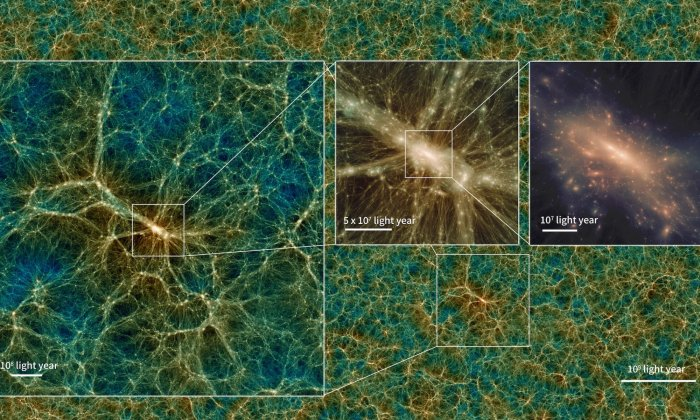

Ученые создали виртуальную Вселенную из 2,1 трлн элементов
Исследователи создали компьютерную Вселенную, которая содержит 2,1 трлн "частиц" в пространстве диаметром 9,6 млрд световых лет. Симуляцию Uchuu можно скачивать. Компьютерная модель позволяет отследить эволюцию Вселенной на протяжении 13 млрд лет. 
Акцент в симуляции сделали не на образовании звезд и планет, а на поведении темной материи в свете расширения Вселенной
Для создания модели специалисты использовали более 40 тысяч компьютерных ядер и потратили 20 млн компьютерных часов. Модель включает более 3 петабайт данных, которые удалось сжать до 100 ТБ, чтобы симуляция помещалась на жестком диске. Например, на Exadrive от Nimbus, твердотельном накопителе емкостью как раз 100 ТБ.
Кроме того, доступ к Uchuu открыт на сайте skiesanduniverses.org. Однако модель на сайте содержит необработанные данные.
Авторы симуляции отмечают, что ее могут использовать ученые, которые занимаются научным анализом данных. По их мнению, научный анализ будет играть решающую роль в исследованиях космоса.
В апреле Nvidia, AMD и Национальный вычислительный центр энергетических исследований (NERSC) представили суперкомпьютер Perlmutter, который займется составлением крупнейшей в истории 3D-карты видимой Вселенной.
Ранее астрономы из Университетского колледжа Лондона создали крупнейшую на сегодняшний момент карту распределения темной материи во Вселенной в рамках проекта Dark Energy Survey.